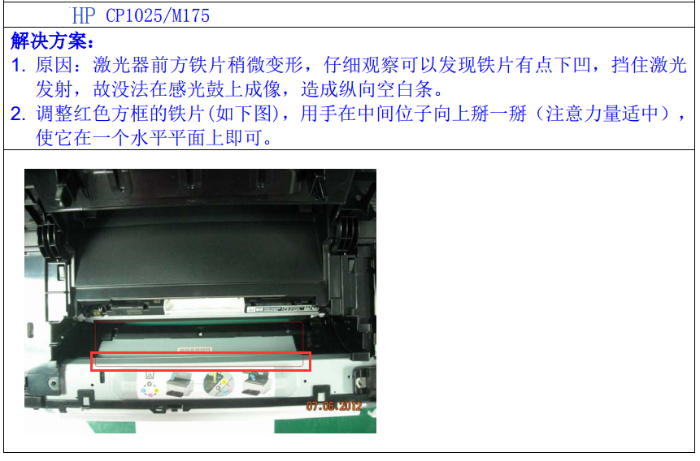
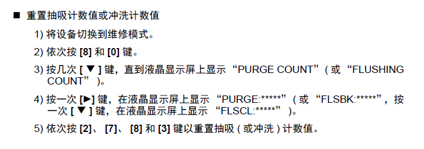
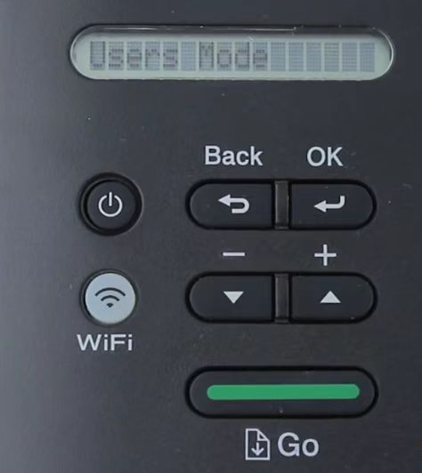
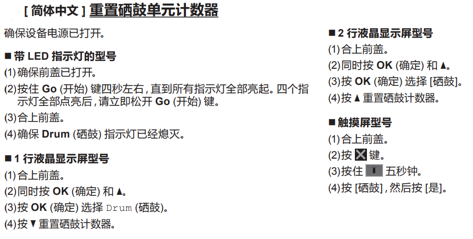

维修手册查询：
ht删tp除s://w中ww.l文aser防exp止res吞sinc链.co接m/参考博客：维修笔记https://blog.lancn.cn/
HP惠普
HP 打印机打印测试页&配置页&耗材状态页
HP M1005打印测试页
方法0：同时按 左键 和 右键。
方法1：直接在打印机菜单中选择。
方法2：在打印机首选项中选择打印对应页面。
方法3：M1005测试页：右键->OK->右键->OK->OK
HP P1108打印测试页
方法1：P1108测试页：顶盖翻7次。
方法2：在打印机首选项中选择打印对应页面。
HP M126a打印测试页&配置页
方法1：按【×】键5秒打印测试页（1张纸），按【×】键10秒打印配置页（2张纸）。
方法2：在HP工具里打印。
HP M128一体机 回复出厂设置/冷复位方法/清零
HP M128一体机回复出厂设置/冷复位方法/清零！
首先关闭打印机；
同时按住打印机右箭头+取消，然后开机，
显示
Permanent Storage Init松手，打印机复位成功；
HP CP1025彩机 搓纸轮 /分页器 拆解
粉量充足 HP CP1025 M175纵向空白

惠普激光类打印机产品错误代码分享
在使用打印机的过程中，可能会遇到打印机报错误代码，这时候用户一般都是束手无策的，根本不知道这些代码代表着什么意思，只能找打印机维修公司来维修，如果遇到不正规的维修公司这时也只能任由他们说是哪里坏了。今天给大家分享一下惠普激光打印机错误代码供大家参考。
惠普激光打印机错误代码 Device State（English） 设备状态(中文） 事件代码 PML值
Black e-label error 黑色硒鼓e标签错误 10.0000 655360
Cyan e-label error 青色硒鼓e标签错误 10.0001 655361
Magenta e-label error 品色硒鼓e标签错误 10.0002 655362
Yellow e-label error 黄色硒鼓e标签错误 10.0003 655363
Imaging drum e-label error 感光鼓e标签错误 10.0004 655364
Black e-label missing 黑色硒鼓e标签丢失 10.1000 656360
Cyan e-label missing 青色硒鼓e标签丢失 10.1001 656361
Magenta e-label missing 品色硒鼓e标签丢失 10.1002 656362
Yellow e-label missing 黄色硒鼓e标签丢失 10.1003 656363
Imaging drum e-label missing 感光鼓e标签丢失 10.1004 656364
Non-HP black 非原装黑色硒鼓 10.3000 658360
Non-HP cyan 非原装青色硒鼓 10.3001 658361
Non-HP magenta 非原装品色硒鼓 10.3002 658362
Non-HP yellow 非原装黄色硒鼓 10.3003 658363
Non-HP drum 非原装感光鼓 10.3004 658364
Non-HP cloned black 非HP（克隆）黑色硒鼓 10.3100 658460
Non-HP cloned cyan 非HP（克隆）青色硒鼓 10.3101 658461
Non-HP cloned magenta 非HP（克隆）品色硒鼓 10.3102 658462
Non-HP cloned yellow 非HP（克隆）黄色硒鼓 10.3103 658463
Non-HP cloned imaging drum 非HP（克隆）感光鼓 10.3104 658464
Unauthorized black supply 非指定黑色耗材 10.3200 658560
Unauthorized cyan supply 非指定青色耗材 10.3201 658561
Unauthorized magenta supply 非指定品色耗材 10.3202 658562
Unauthorized yellow supply 非指定黄色耗材 10.3203 658563
Used (moved) black supply 使用过的黑色耗材 10.3300 658660
Used (moved) cyan supply 使用过的青色耗材 10.3301 658661
Used (moved) magenta supply 使用过的品色耗材 10.3302 658662
Used (moved) yellow supply 使用过的黄色耗材 10.3303 658663
Used (beyond life) black supply 使用过的超过使用寿命的黑色耗材 10.3400 658760
Used (beyond life) cyan supply 使用过的超过使用寿命的青色耗材 10.3401 658761
Used (beyond life) magenta supply 使用过的超过使用寿命的品色耗材 10.3402 658762
Used (beyond life) yellow supply 使用过的超过使用寿命的黄色耗材 10.3403 658763
Incompatible black supply 不兼容的黑色耗材 10.3500 658860
Incompatible cyan supply 不兼容的青色耗材 10.3501 658861
Incompatible magenta supply 不兼容的品色耗材 10.3502 658862
Incompatible yellow supply 不兼容的黄色耗材 10.3503 658863
Genuine HP supplies installed (transition caused by black) 已安装正品耗材（更换黑色硒鼓出现） 10.4000 659360
Genuine HP supplies installed (transition caused by cyan) 已安装正品耗材（更换青色硒鼓出现） 10.4001 659361
Genuine HP supplies installed (transition caused by magenta) 已安装正品耗材（更换品色硒鼓出现） 10.4002 659362
Genuine HP supplies installed (transition caused by yellow) 已安装正品耗材（更换黄色硒鼓出现） 10.4003 659363
Unsupported black supply 不被支持的黑色耗材 10.4100 659460
Unsupported cyan supply 不被支持的青色耗材 10.4101 659461
Unsupported magenta supply 不被支持的品色耗材 10.4102 659462
Unsupported yellow supply 不被支持的黄色耗材 10.4103 659463
Printing past very low black 通过不足的黑色碳粉打印中 10.7000 662360
Printing past very low cyan 通过不足的青色碳粉打印中 10.7001 662361
Printing past very low magenta 通过不足的品色碳粉打印中 10.7002 662362
Printing past very low yellow 通过不足的黄色碳粉打印中 10.7003 662363
Printing black only 仅用黑色碳粉打印 10.7100 662460
Not printing black only 不打印黑色 10.8100 663460
Unspecified supply error in Toner Collection Unit 废粉仓中某种耗材问题 10.9531 664891
Waste Toner Out (full) black 黑色废粉溢出 10.9800 665160
Waste Toner Out (full) cyan 青色废粉溢出 10.9801 665161
Waste Toner Out (full) magenta 品色废粉溢出 10.9802 665162
Waste Toner Out (full) yellow 黄色废粉溢出 10.9803 665163
Paper jam 卡纸 13.0000 851968
External device paper jam (13.12XX) 外部设备卡纸 13.1200 853168
Fax modem reset and power cycle 传真modem重置并关机再开机 19.0000 1245184
Memory out in print 打印内存不足 20.0000 1310720
Memory out in copy 复印内存不足 20.0001 1310721
Memory out in scan 扫描内存不足 20.0002 1310722
Memory out in photo 照片内存不足 20.0003 1310723
Memory out in fax 传真内存不足 20.0004 1310724
Memory out in fax flash 传真闪存不足 20.0005 1310725
Memory out in scan calibration 扫描校准内存不足 20.0006 1310726
Page punt 页面悬空 21.0000 1376256
SMTP error 简单邮件传输协议错误 25.0000 1638400
Scanner motor test failure 扫描马达测试错误 30.0012 1966092
Beam detect malfunction BD（光束检测）异常 41.2000 2688976
Unexpected size 不合规格尺寸的纸张 41.3000 2689976
Fuser error 定影器错误 50.0000 3276800
Low fuser temperature error 定影器温度不足 50.1000 3277800
High subthermistor area 3 fuser error 定影器高温热敏电阻区域3错误 50.1100 3277900
Low subthermistor area 3 fuser error 定影器低温热敏电阻区域3错误 50.1200 3278000
Slow fuser error 定影器加热过慢 50.2000 3278800
High fuser temperature error 定影器温度过高 50.3000 3279800
Fuser drive circuit error 定影器驱动电路错误 50.4000 3280800
Fuser open error 定影器打开错误 50.7000 3283800
Low subthermistor fuser error 低温热敏电阻定影器错误 50.8000 3284800
High subthermistor fuser error 高温热敏电阻定影器错误 50.9000 3285800
Beam detect or laser error BD（光束检测）或激光错误 51.0000 3342336
Black scanner laser error (inline devices only) 黑色激光器错误（仅内联设备） 51.2000 3344336
Cyan scanner laser error (inline devices only) 青色激光器错误（仅内联设备） 51.2100 3344436
Magenta scanner laser error (inline devices only) 品色激光器错误（仅内联设备） 51.2200 3344536
Yellow scanner laser error (inline devices only) 黄色激光器错误（仅内联设备） 51.2300 3344636
Scanner error 扫描器错误 52.0000 3407872
Environmental sensor error 环境传感器错误 54.0100 3539044
Density sensor error 密度传感器错误 54.0600 3539544
Yellow drum phase control sensor error 黄色感光鼓阶段控制传感器错误 54.0700 3539644
Magenta drum phase control sensor error 品色感光鼓阶段控制传感器错误 54.0800 3539744
Cyan drum phase control sensor error 青色感光鼓阶段控制传感器错误 54.0900 3539844
Black drum phase control sensor error 黑色感光鼓阶段控制传感器错误 54.1000 3539944
Black density out of range 黑色碳粉密度超过范围 54.1100 3540044 Jedi - 54.1400
Cyan density out of range 青色碳粉密度超过范围 54.1101 3540045 Jedi - 54.1300
Magenta density out of range 品色碳粉密度超过范围 54.1102 3540046 Jedi - 54.1200
Yellow density out of range 黄色碳粉密度超过范围 54.1103 3540047 Jedi - 54.1100
Black density measurement abnormality 黑色碳粉密度测量异常 54.1200 3540144
Cyan density measurement abnormality 青色碳粉密度测量异常 54.1201 3540145
Magenta density measurement abnormality 品色碳粉密度测量异常 54.1202 3540146
Yellow density measurement abnormality 黄色碳粉密度测量异常 54.1203 3540147
Color plane registration sensor error (inline devices only) 彩色平面登记传感器错误（仅内联设备） 54.1400 3540344 Jedi - 54.1000
Black CPR pattern can't be read 黑色CPR样式不能被读取 54.1599 3540543
Cyan CPR pattern can't be read 青色CPR样式不能被读取 54.1501 3540445
Magenta CPR pattern can't be read 品色CPRr样式不能被读取 54.1502 3540446
Yellow CPR pattern can't be read 黄色CPR样式不能被读取 54.1503 3540447
Yellow toner level sensor error 黄色硒鼓余量传感器错误 54.1500 3540444
Magenta toner level sensor error 青色硒鼓余量传感器错误 54.1600 3540544
Cyan toner level sensor error 品色硒鼓余量传感器错误 54.1700 3540644
Black toner level sensor error 黑色硒鼓余量传感器错误 54.1800 3540744
Bad TOP sensor 顶盖传感器错误 54.1900 3540844
Carousel rotation error 滚筒转动错误 54.2000 3540944
BD error BD错误 54.2100 3541044
TOP sensor error TOP传感器错误 54.2500 3541444
Density sensor or CPR contamination warning (54.1C) 密度传感器或CPR污损警告 54.2800 3541744
Engine internal communication error 引擎内部通信错误 55.0000 3604480
DC controller NVRAM data error DC控制器NVRAM数据错误 55.0601 3605081
DC controller NVRAM access error DC控制器NVRAM访问错误 55.0602 3605082
DC controller memory error DC控制器内存错误 55.1000 3605480
Engine/ formatter communication erro 引擎/格式化板通信错误 55.3000 3607480
Engine communication timeout error 引擎通信超时错误 55.4000 3608480
DC controller NVRAM restore DC控制器NVRAM重置 55.9028 3613508
Illegal input 非法输入 56.0100 3670116
Fan motor error 风扇马达错误 57.0000 3735552
Fan motor error 风扇马达错误 57.0100 3735652
Fan error 风扇错误 57.0200 3735752
Fan motor error 风扇马达错误 57.0600 3736152
Low voltage power supply error 低压电源板错误 58.0400 3801488
Main motor rotation error (59.A0) 主马达旋转错误 59.0160 3866784
Developer motor rotation error (59.C0) 显影马达旋转错误 59.0192 3866816
Transfer alientation failure (59.F0) 转印分离错误 59.0240 3866864
Fuser motor startup error 定影器马达启动错误 59.3000 3869624
Fuser motor error 定影器马达错误 59.4000 3870624
Image drum motor startup error- black 感光鼓马达启动错误－黑色 59.5000 3871624
Image drum motor startup error- cyan 感光鼓马达启动错误－青色 59.5100 3871724
Image drum motor startup error- magenta 感光鼓马达启动错误－品色 59.5200 3871824
Image drum motor startup error- yellow 感光鼓马达启动错误－黄色 59.5300 3871924
Image drum motor rotation error- black 感光鼓马达旋转错误－黑色 59.6000 3872624
Image drum motor rotation error- cyan 感光鼓马达旋转错误－青色 59.6100 3872724
Image drum motor rotation error- magenta 感光鼓马达旋转错误－品色 59.6200 3872824
Image drum motor rotation error- yellow 感光鼓马达旋转错误－黄色 59.6300 3872924
Black developer motor startup error 黑色显影马达启动错误 59.7000 3873624
Yellow developer motor startup error 黄色显影马达启动错误 59.7300 3873924
Black developer motor rotation error 黑色显影马达旋转错误 59.8000 3874624
Yellow developer motor rotation error 黄色显影马达旋转错误 59.8300 3874924
ETB motor start error ETB马达启动错误 59.9000 3875624
T2 Clutch error T2离合器错误 59.9900 3876524
External device operation error (65.12XX) 外部设备操作错误 65.1200 4261040
External device critical error (66.12XX) 外部设备关键错误 66.1200 4326576
External device communication error 外部设备通信错误 66.0015 4325391
79 service, firmware exception 79服务，固件意外错误 79.0000 5177344
79 service, firmware ASIC fault79 79服务，固件ASIC 失效79 79.0001 5177345
79 service, firmware Boba ASIC fault79 79服务，固件Boba ASIC 失效79 79.0003 5177347
79 service, firmware memory interface fault 79服务，固件内存接口失效 79.0004 5177348
79 service, firmware text write fault79 79服务，固件文本写入失效79 79.0005 5177349
Firmware asserts 固件断言 49.<line #> #VALUE!
Download error - bad signature accepted 下载错误－接受了错误的签名 99.0028 6488092
Download error - bad signature canceled 下载错误－取消了错误的签名 99.0029 6488093
Fax Event Log Codes 传真事件代码
Receive fax directory missing 接收传真目录丢失 20.0016 1310736
Send fax directory missing 发送传真目录丢失 20.0032 1310752
Send ID file is corrupted 发送ID文件损坏 20.0048 1310768
Receive ID file is corrupted 接收ID文件损坏 20.0064 1310784
Flash log corrupted 闪存日志损坏 20.0080 1310800
Flash init due to firmware upgrade 因固件更新，闪存初始化 20.0096 1310816
Fax flash sec store missing 重置闪存第二存储丢失 20.0119 1310839
Write to flash failed 写入闪存失败 20.2467 1313187
Brother兄弟/Lenovo联想
Brother墨水类型说明
BTD60BK为染料墨水，BT6009BK为颜料墨水。BT5009C/M/Y为染料墨水。
询问兄弟中国微信公众号官方人工客服/淘宝/京东客服得知。
购买第三方代用墨水时，请注意区分墨水类型，以防用错类型导致堵喷头。
Brother DCP-T220 226 425w 426w 显示墨水回收盒已满，清除计数（进入维修模式）
1.确保打印机处于开机就绪状态，指示灯显示如下：
2.同时按住【身份证复印（或【上传】）】键+【彩色启动】键5秒，电源LED 和警告LED 将间歇闪烁两秒。之后，所有LED 将间歇闪烁两秒( 如果未发生错误)，依次按【身份证复印（或【上传】）】键2次和【黑白启动】键4次，设备将进入维修模式。
3.查看设备密码，位于设备后部的标签上，如图所示（Pwd后的字符串即为密码）：
4.打开计算机中的Brother Utility，点击【工具】选项卡中的【设备管理】，进入Web管理页面：

输入步骤3中查找到的密码，点击登录：
打开左侧【管理员】选项卡中的【远程面板】：
进入维修模式的远程面板：
5.注意，按任意键后，在第一次显示身份验证画面时，会弹出对话框要求输入用户名和密码。请尝试使用以下密码组合：（1）用户名：admin 密码：步骤3中查找到的密码 。（2）用户名：Admin 密码：Admin 。（3）用户名：admin 密码：admin 。
6.如果输入有误，需要回到维修模式初始菜单，按【Stop】键即可。
依次按【8】和【0】，会出现ERROR CODE：
然后多次按【下】键，直到显示PURGE COUNT后，按【右】键。
屏幕出现抽吸计数值或冲洗计数值：
此时，依次按【2】、【7】、【8】和【3】键可重置计数值。
然后按【Stop键】回到维修模式的初始菜单：

最后连续按两次【9】 键可使设备返回到待机状态。
注意：即使重置了抽吸计数值它也不会变为0，因为其中还计算了中间回收盒中的墨水。
具体内容请查阅【维修手册】
7.！！！警告！！！虽然废墨收集器计数清除后，打印机可以继续打印，但是如果不进行及时更换，废墨有可能会漫出收集器，流到打印机外，甚至可能造成打印机内部短路。所以还是需要及时进行更换。
以下为维修模式功能列表，仅供参考：

根据维修手册内容，按5次【↓】键可查看PAGE COUNT；按15次【↓】键可查看PURGE COUNT（抽吸计数）；按17次【↓】键可查看FLUSHING（冲洗计数）；按18次【↓】键可查看SCAN COUNT（扫描计数）。
Brother HL-L2300D/L2320D/2260/2260D/L2321D清除碳粉盒/硒鼓计数（进入维修模式）
硒鼓
1、关机，打开前盖按住【GO】键开机；
2、三个灯（【Toner】、【Drum】、【Paper】)应该都是亮着的；
3、按10下【GO】键，三个灯亮（【Toner】、【Drum】、【Paper】)成黄色；
4、再按1下【GO】键，这时【Toner】灯应该是不亮的。合上前盖，只有【Ready】灯应该是亮着的，清零完成。
兄弟MFC7380粉盒硒鼓清零方法
兄弟MFC7380是brother推出来替代MFC7360的机器，用的粉盒是TN2325 硒鼓是DR2350。
MFC-7380碳粉清零：（提示更换碳粉盒或者碳粉用尽）
第一步：打开打印机电源。
第二步：打开打印机的前盖，（就是机器前的硒鼓室盖板，拉下就可以）。
第三步：按住机器面板上"OK"键（不要松手）直到屏幕出现"更换硒鼓？1.是 2.否"，按一次"启用"键，屏幕变为空白。
第四步：按2次数字"0"键，屏幕出现00，按2次"OK"键，关闭前盖，加粉清零步骤结束。打印机就可以正常适用了。
注意事项：第三步和第四步动作要迅速连贯； MFC-7380硒鼓清零：（提示更换硒者或者硒鼓用尽）
第一步：打开打印机电源。
第二步：打开打印机的前盖，（就是机器前的硒鼓室盖板，拉下就可以）。
第三步：按住机器面板上"OK"键（不要松手）直到屏幕出现"更换硒鼓？1.是 2.否"，按1次数字"1"键，按1次"OK"键；
第四步：关闭前盖，硒鼓清零步骤结束。打印机就可以正常适用了。
兄弟MFC7360和DCP7060D粉盒硒鼓清零方法
兄弟打印机没墨了就要加墨粉，但是你是否发现加了墨粉以后还是不能打印。提示需要更换墨粉盒。不要着急，这时需要将打印机清零。下面将本人的亲身经历分享给大家。希望能帮助到大家。MFC7360和DCP7060D使用的耗材虽然都是TN2225/DR2250，但是清零方法却不一样！
MFC-7360碳粉清零：
1、打开前盖；
2、按清除键，显示更换硒鼓 ；
3、再按启动键，然后按00，过几秒关前盖就可以了。
硒鼓清零：
第一步：打开前盖；
第二步：按清除键 显示跟换硒鼓 1是 2否
第三步：按1 过几秒就可以关前盖 就可以了。
DCP-7060D碳粉清零：
第一步：打开打印机的电源（一定要开机状态下操作）；
第二步：打开打印机的前盖；
第三步：在机器面板上按“清除Clear”键，屏幕显示“更换硒鼓▲是▼否”;
第四步：在机器面板上按“启用Star”键，
第五步：按“+”号键11次，屏幕显示“11”（这里要记得是迅速调到11， 慢了会返回第一步。）
第六步：按机器面板“确定OK”键，合上前盖，亲，终于可以打印了。
硒鼓清零(提示硒鼓用尽/更换硒鼓情况下)： 第一步，第二步，第三步和碳粉清零一样。 第四步：按“▲”号键1次，屏幕显示“已接受accept;” 第五步：按机器面板“确定OK”键，合上前盖，亲，终于可以打印了。
兄弟HL-3150/3140彩色打印机粉盒清零方法
兄弟HL-3150CDN/3140/3170CDW彩色激光打印机粉盒清零方法步骤(粉盒型号为TN221/265/281/285)：
1，在顶盖单元开启状态下 同时按[Secure]键和[Cancel]键。
2，液晶显示屏上显示“BK.TNR-STD”。用[+]或[-]键选择相应的墨粉盒，然后按[OK]键。
3，液晶显示屏上显示“Reset、 Exit”按‘+’键。
4，计数值被重置。
兄弟HL-3150CDN/3140/3170CDW彩色激光打印机硒鼓清零方法步骤（硒鼓型号为DR281CL，共有4个，不分颜色）：
1、在按住操作面板上的Go键同时，按向上箭头键。
2、按向上或向下箭头键显示硒鼓单元。按OK。
3、按向上或向下箭头键显示你所更换硒鼓单元的颜色。按 OK。
4、按向上箭头键显示重置来重置硒鼓单元计数器。
兄弟HL-5590DN/5595DN/5580d/5585D加粉清零硒鼓清零
前几期说了兄弟MFC-8535dn/8530dn/8540DN这些一体机的粉盒硒鼓清零方法，今期给大家带来都是用相同型号硒鼓粉盒（TN3435/DR3450）的打印机HL-5590DN/5595DN/5580d/5585D的粉盒硒鼓清零方法教程，希望对大家有所帮助：
粉盒清零：屏幕显示:Replace the Toner Cartridge tober life end
方法1（机器上操作，不用取出硒鼓粉盒）针对原装粉盒加粉：
1、在通电待机的状态下，打开打印机前盖，这时候屏幕显示：Cover is open Close the front cover(盖子被打开,请关闭前盖)；
2、同时按【Secuer】和【Cancel】健，屏幕出现：TNR-STD；这时候可以按上下箭头【▲】【▼】键选择：
TNR-STD 标准粉盒
TNR-HC 高容量粉盒
TNR-S.HC 超高容量粉盒
TNR-U.HC 超大容量粉盒
四个选项字母代表的意思，就是打印页数不同，用户根据自身粉盒容量大小选择合适的；
3、按【OK】健，屏幕出现：▲Reset ▼Exit；
4、按【▲】+号健，屏幕出现：Accept；
5、关闭打印机前盖，完成清零。
方法2 ：粉盒复位（带有复位齿轮）：
硒鼓复位：打印机屏幕显示：Replace Drum
1、在通电待机的状态下，打开打印机前盖，这时候屏幕显示：Cover is open
Close the front cover(盖子被打开,请关闭前盖)； 2、长按【OK】健，等屏幕显示： Drum Unit
3、按【OK】健，屏幕出现：▲Reset ▼Exit；
4、按【▲】+号健，屏幕出现：Accept；
5、关闭打印机前盖，完成清零。
兄弟DCP-7090DW, DCP-7190DW, DCP-B7500D, DCP-B7520DW, DCP-B7530DN, DCP-B7535DW, DCP-L2535DW, DCP-L2550DW, MFC-B7700D, MFC-B7720DN施乐248系列粉盒硒鼓清零教程
近日来，很多小伙伴问到兄弟2535/2550/7090/7190还是施乐248系列清零复位方法，今天硬货就来了：
PS知识点：兄弟DCP-L2535DW和DCP-L2550DW原本是在国外率先上市的型号，按照以往兄弟厂家的惯例，引入国内对应型号分别是7080/7180的升级版DCP7090DW/DCP7190DW。但兄弟这次引入国内 不但有了DCP7090DW/DCP7190DW，还同时保留了DCP-L2535DW/DCP-L2550DW两款机型，俗称电商版，在官方各大电商平台销售；而7090/7190两款作为渠道版，在代理商实体店电脑城间销售。所以如果有粤印的经销商遇到L2535DW和L2550DW的机器时候要注意，如果是美洲版和澳洲版等，，粉盒硒鼓是不一样的；需要根据原装鼓架来分辨版本（带芯片）。国内版的L2535DW/L2550DW是和7090DW/7190DW硒鼓粉盒可以通用的。
下面说重点：关于它们粉盒硒鼓复位的操作教程：
一、粉盒清零教程
（1）机器上操作碳粉清零
1、打开机器前盖
2、同时按“清除键”和“停止键”，同时多按几次，直到机器出现“重置菜单”
3、按“+”键选择重置“K.TNR-HC”
4、按“ok”键确认
5、按“+”选择重置
6、按“ok”键确认
PS：提到这里，很多小伙伴问 为啥我按照这个操作还不行呢，上一次还是可以的，因为这个方法不能一直连续用，和下面粉盒操作粉盒轮着来操作就可以，就是一次粉盒，一次机器。
二、硒鼓清零教程（提示硒鼓用尽或更换硒鼓）
官方教程
确保已打开设备电源。
打开前盖。
同时按 OK 和向上箭头键。
按 OK 选择 硒鼓。
按 向*上* 箭头键重置硒鼓单元计数器。
网络教程:
1、确保机器在开机首页状态下。
2、同时按“OK”键和“▲”键（如果没反应，请按停止退出键 返回首页界面 再操作）。
3、选择“硒鼓”，再按“OK”键
最后按“▲”键，重置硒鼓
兄弟MFC-L2700d粉盒硒鼓清零方法
兄弟MFC-L2700d粉盒清零方法（提示更换replace toner” 或者“更换墨粉盒）：
1、打开打印机前盖（但无需拿出里面的硒鼓粉盒）
2、长按功能键（menu键），不松手，等待出现Reset Menu 菜单
3、面板上出现“Reset Menu”下方显示“TNR-STD A”（若不是，可以用上↑和下↓方向键切换）任何一个选项都可以①TNR-STD A 标准容量 ②TNR-STD B 大容量 ③TNR-HC 高容量粉盒。请根据自身需求选择，默认选①或者 ③；
①显示TNR-STD A，然后点OK，出现“1重置2退出”的提示，我们按右边数字键盘的“1”键，完成重置显示“设置成功”，自动回到上级页面；
②按向下↓方向键，切换到TNR-STD B，然后点OK，出现“1重置2退出”的提示，我们按右边数字键盘的“1”键，完成重置显示“设置成功”，自动回到上级页面；
③按向下↓方向键，切换到TNR-HC，然后点OK，出现“1重置2退出”的提示，我们按右边数字键盘的“1”键，完成重置显示“设置成功”，自动回到上级页面；
4、设置完后，就可以按clear返回（退出键），并合上后盖，清零完成。
兄弟MFC-L2700d硒鼓清零方法（提示更换replace drum” 或者“更换硒鼓）：
1、打开打印机前盖（但无需拿出里面的硒鼓粉盒）；
2、长按功能键（OK键），不松手，等待出现Replace Drum(更换硒鼓) 菜单；
3、出现“1重置2退出”的提示，我们按右边数字键盘的“1”键，完成重置显示“设置成功”，自动回到上级页面；
4、关闭前盖，硒鼓清零完成。
联想3600/3650定影故障四灯全亮清除方法
联想LJ3600/3650 四灯全亮一般为电源电压过低或不稳定停电引起系统保护性错误，用户检查或等待电网电压稳定后按照以下步骤复位打印机，
1、关闭电源，打开前盖；
2、按住"GO"键打开电源（按住不放）；
3、面板指示灯亮后，等READY指示灯熄灭后松开"GO"键；
4、检查所有指示灯熄灭 ；
5、按2次"GO”按钮，检查墨粉/硒鼓/纸张指示灯亮
6、再按1次"GO"键（如果操作正确几秒钟后打印机会自动重新启动，否则关闭电源开关重复以上步骤）待打印机自动重新启动完成后关闭前盖即可。
注意：若全部操作正确且打印机有重新启动动作，但预热结束依旧四灯全亮，重复清除2次无效说明打印机存在硬件故障，请联系当地售后服务人员。
兄弟MFC7380粉盒硒鼓清零方法
兄弟MFC7380是brother推出来替代MFC7360的机器，用的粉盒是TN2325 硒鼓是DR2350。
MFC-7380碳粉清零：（提示更换碳粉盒或者碳粉用尽）
第一步：打开打印机电源。
第二步：打开打印机的前盖，（就是机器前的硒鼓室盖板，拉下就可以）。
第三步：按住机器面板上"OK"键（不要松手）直到屏幕出现"更换硒鼓？1.是 2.否"，按一次"启用"键，屏幕变为空白。
第四步：按2次数字"0"键，屏幕出现00，按2次"OK"键，关闭前盖，加粉清零步骤结束。打印机就可以正常适用了。
注意事项：第三步和第四步动作要迅速连贯； MFC-7380硒鼓清零：（提示更换硒者或者硒鼓用尽）
第一步：打开打印机电源。
第二步：打开打印机的前盖，（就是机器前的硒鼓室盖板，拉下就可以）。
第三步：按住机器面板上"OK"键（不要松手）直到屏幕出现"更换硒鼓？1.是 2.否"，按1次数字"1"键，按1次"OK"键；
第四步：关闭前盖，硒鼓清零步骤结束。打印机就可以正常适用了。
兄弟DR2450 2595 7895 7190 7195 2595 打印机硒鼓清零 鼓架清零方法
兄弟DR2450 2595 7895 7190 7195 2595 打印机硒鼓清零 鼓架清零方法


兄弟TN-B020粉盒加粉清零B7530DN B7500D B7535DW B7720DN B2000D B2050DN
兄弟TN-B020粉盒加粉后或者更换新的粉盒还提示墨粉不足或者用尽的，，需要进行粉盒清零操作！！！ 一、粉盒复位
方法1：粉盒齿轮复位；
方法2：在一体机机器上操作复位：（和方法1轮着来 不能一直机器复位）
（DCP-B7535DW/B7520DW/7530DN/7500D）
1、打开机器前盖
2、同时按“清除键”和“停止键”，同时多按几次，直到机器出现“重置菜单”
1、按“+”键选择重置“K.TNR-STR”；
2、按“ok”键确认
3、按“+”选择重置
4、按“ok”键确认
二、硒鼓复位（提示更换硒鼓或者硒鼓用尽）（DCP-B7535DW/B7520DW/7530DN/7500D）
1、确保机器在开机首页状态下。
2、同时按“OK”键和“▲”键（如果没反应，请按停止退出键 返回首页界面 再操作）。
3、选择“硒鼓”，再按“OK”键
4、最后按“▲”键，重置硒鼓
兄弟brother HL-2240D 加粉后清零方法
兄弟brother HL-2240D 加粉后清零方法（toner亮灯）：
1、关闭打印机
2、打开前盖板
3、在按下(GO)键的同时打开电源
4、等除READY指示灯外的其余所有指示灯点亮，然后松开(GO)键
5、连续按两次（GO）键---灯除READY指示灯外的其余所有指示灯再次亮起
6.再连续按6次（GO）键---灯会全灭掉，合上打印机前盖板，清零完成。
硒鼓清零方法（drum亮灯）：
1、关闭打印机
2、打开前盖板
3、长按住Go键4 秒钟直至所有LED亮起。所有四个LED灯都亮起后再松开。
4 合上打印机前盖板。
5 确保 Drum(硒鼓) LED灯熄灭。清零完成。
兄弟DCP-1518, DCP-1519, DCP-1608, DCP-1618W, DCP-1619, MFC-1813, MFC-1816, MFC-1818, MFC-1819, MFC-1906, MFC-1908, MFC-1919NW一体机加粉后或者更换新粉盒后还提示墨粉不足 就需要机器清零
兄弟DCP1608/1618w一体机加粉后或者更换新粉盒后还提示墨粉不足 就需要机器清零：
碳粉清零：提示更换粉盒或者碳粉用尽
1.按”Menu 功能“ 然后上下按键找到“4 设备信息”,按”Ok“键。
2.按上下按键找到“6 重置硒鼓”，按住“Ok”键不放。屏幕显示“↑重置 ↓退出”，按“开始”键，面板显示空白。按上下按键选择数字 “11”，然后按“OK”键。
硒鼓清零：提示更换硒鼓或者硒鼓用尽
硒鼓：重置硒鼓计数器
官方教程：
按菜单。
按上 或 下 箭头键选择 设备信息.。按 OK。
按上 或 下 箭头键选择 重置硒鼓。按 OK 持续3秒钟。
按上 箭头键重置硒鼓计数器。
液晶显示屏上显示 接受。
按 停止/退出。
网络教程：
1、按"功能"键 ，按向上或向下箭头键选择设备信息。按OK。
2、按向上或向下箭头键选择重置硒鼓计数器。按住OK 3秒钟。
3、按向上箭头键重置硒鼓单元计数器。
4、按“停止/退出”键。
兄弟2560DN 联想2655DN 粉盒硒鼓清零方法
粉盒清零：
关闭电源，打开前盖，按GO键开机，检查屏幕上显示9块黑块，松开GO 键，检查屏幕上显示User Mode。再次按GO 键9次，等待NETWORK 灯亮，按GO 键3次。
硒鼓清零：
1、确保打印机前盖打开；
2、按住机器上OK（确定）2秒以上，直到显示“drum unit“（硒鼓单元)，然后按OK（确定）键；
3、按▲键，显示reset(重置)，然后重置硒鼓计数器；
4、合上前盖。
联想7400Pro打印机粉盒/硒鼓清零
粉盒具体步骤如下
1、加电，打开前盖；长按“确认键”3秒待屏提示是否更换墨盒；按“开始”键一下；按“+”键至“11”；按“确认ok”键一下再“开始”；关闭前盖。
硒鼓：
打开前盖，按"清除/返回"键，屏幕提示“更换硒鼓？”，此时选择“是”（按向上的箭头），关闭前盖。
联想7400打印机粉盒/硒鼓清零
粉盒：
1、开机——打开前盖——按清除返回键——上箭头 2、按清除返回键——开始键——上箭头11次——屏幕上显示11——OK键——关闭前盖，好了
硒鼓：
打开前盖，按"清除/返回"键，屏幕提示“更换硒鼓？”，此时选择“是”（按向上的箭头），关闭前盖。
DCP-L3568CDW, HL-L3288CDW, MFC-L3768CDW重置硒鼓单元计数器
您更换新的硒鼓单元时，请遵循以下步骤重置硒鼓单元计数器：
为避免影响打印质量或对设备造成损坏，如果无需更换硒鼓单元，请勿重置硒鼓单元计数器。
如果在不更换硒鼓单元的情况下重置硒鼓计算器，设备将无法正确计算硒鼓的剩余寿命。
确保已打开设备电源。
按住 (墨粉) 键5秒钟。
按硒鼓。
选择您刚更换的硒鼓单元的墨粉颜色 。
按 是。
DCP-7080, DCP-7080D, DCP-7180DN, MFC-7380, MFC-7480D, MFC-7880DN
硒鼓：重置硒鼓计数器
官方教程：
确保设备电源已打开。
打开前盖。
按住OK 2秒钟。
按向上箭头键或数字键1重置硒鼓单元计数器。
关闭前盖。
DCP-9030CDN, HL-3160CDW, HL-3190CDW, MFC-9150CDN, MFC-9350CDW
硒鼓：重置硒鼓计数器
官方教程：
注: 以下是某一设备的图例，可能与您的设备外观有所差异。
确保已打开设备电源。
请确保后盖已正确合上。
按住 (墨粉) 键5秒钟。
按硒鼓。
选择您刚更换的硒鼓单元的墨粉颜色 。
按*是*。
HL-2595DW, HL-B2050DN
硒鼓：重置硒鼓计数器
官方教程：
确保已打开设备电源。
关闭前盖。
同时按OK键和向上箭头键 。
按OK 选择硒鼓。
按向下 箭头键重置硒鼓单元计数器。
Canon佳能
佳能G1800,G1810,G2800,G3800打印机5B00错误代码清零方法教程
步骤一:进入维修模式--同时按电源键和停止键开机,然后不放电源键按5次停止键。此时放开电源键打印机 会进入到维修模式(电源键长亮表示进入维修模式成功)
步骤二:进入维修模式成功后，打印机里放2张纸，然后按5次停止键1次电源键，此时打印机会打印- -张清零 成功的纸张。
步骤三:纸张打印好了之后，再按3次停止键1次电源键，然后打印机会再打印一张纸，然后重启打印机就可 以了。
EPSON爱普生
EPSON L系列一体机显示废墨收集器已满，计数清零（Adjustment Program使用）
1.下载对应机型的Adj Program。注意，某些程序可能需要手动注册激活（如L3150系列，包括L3151、L3153），参见该程序的文件夹下教程。此处提供几个参考网站，提供免费的程序下载：
xxxxxxxxxxht删tp除s://w中ww.kp文usp防riyo止new吞s.co链m/do接wn哈lo哈ad/ht删tp除s://w中ww.bl文owin防gid止eas.c吞om/p链age接/1/?哈s=re哈set哈ter&哈po哈st哈_typ哈e=p哈ostht删tp除s://dr中ive.pr文inte防rsm止aste吞r.co链m/e接ps哈on/2.打印机开机，使用USB连接到计算机，右键->以管理员身份运行Adj Program，点击【Select】，如图：
3.在弹出框点击【Model Name】，选择打印机对应型号；然后点击【Port】，选择打印机所连接的端口（通常默认选择【Auto Selection】自动选择即可）。最后点击【OK】。
4.点击【Particular adjustment mode】，然后选中【Waste ink pad counter】，点击【OK】。
5.勾选中【Main pad counter】，点击Check the current counter value.（检查当前计数器值）后的【Check】按钮可以查看当前废墨收集器计数，点击Initialize the selected counters.（初始化选中的计数器）后的【Initialize】按钮可以重置废墨收集器计数。
6.完成后，重启打印机即可。点击下方的【Finish】按钮，然后点击下方的【Previous】按钮，最后点击下方的【Quit】按钮，退出Adj Program。
7.！！！警告！！！虽然废墨收集器计数清除后，打印机可以继续打印，但是如果不进行及时更换，废墨有可能会漫出收集器，流到打印机外，甚至可能造成打印机内部短路。所以还是需要及时进行更换。
Fuji Xeorx富士施乐/Xerox施乐
施乐s2520 施乐s1810 每次打印都要按节电2次才能打印纸张不能直接打印的解决方案
施乐s2520 施乐s1810 每次打印都要按节电2次才能打印纸张不能直接打印是什么情况
估计是通常打印机设置为节能模式后，机器默认时间内没有人使用就进入节能模式。这个模式下你每次请手动按一下节能键唤醒机器，之后才能打印。解决方法：长按星号键可以进入节能模式设置。把时间修改一下就能好点。
按登录4秒以上，输入11111，按登录进入到管理员模式，输入101会显示1，可以最大改到239. 就是默认1分钟，最大可以改成239分钟。
施乐S1810/S2010清除复印密码
施乐S1810/S2010清除复印密码（就每次复印时需要输入密码或ID、密码）：
按面板上的“登陆”键，输入密码： 11111后按“启动”键，再输入： 203后按“启动”键，屏幕上会显示“1”或“2”，不用管它，直接输入： 000，然后再按面板上的“登陆”键。
操作完毕开关一下机器，就可以看到密码没有了，直接复印吧。
其实这个就是利用管理员权限，将原来的“单一账户模式”或“多账户模式”改为“无账户模式”，改成“无账户模式”后，原来设置的其它账户模式下的密码，自然也就失效了。
Toshiba东芝
东芝240S/241/300D/301DN硒鼓粉盒清零方法
东芝240S清零：
开机—打开打印机前盖—清除—启动（液晶屏无任何显示）—向上键（液晶屏显示数字01）—继续按向上键（液晶屏显示11）— 按ok键—盖上前盖。
东芝241S清零：
硒鼓清零:打开打印机前盖，按清除，选择1是，关闭前盖即可。
粉盒清零:打开打印机前盖，依次按清除，启用，按11，关闭前盖即可。
东芝300D粉盒清零： 1.打开打印机前盖 2.按"OK"键3秒，显示更换硒鼓 3."启用"键 4."+"键 "-"键 显示00 5.按"OK"键 6.关闭前盖。
东芝301DN粉盒清零：
1、打开打印机前盖后按“OK”键2~3秒直到屏幕出现“是否更换硒鼓”后才松开。
2、再按一下“(启动)绿色剪头”键让屏幕无任何显示。
3、连按“+”键十一次让屏幕上的数字显示到“11”为止。
4、按“OK”键结束，关闭前盖，完成清零。